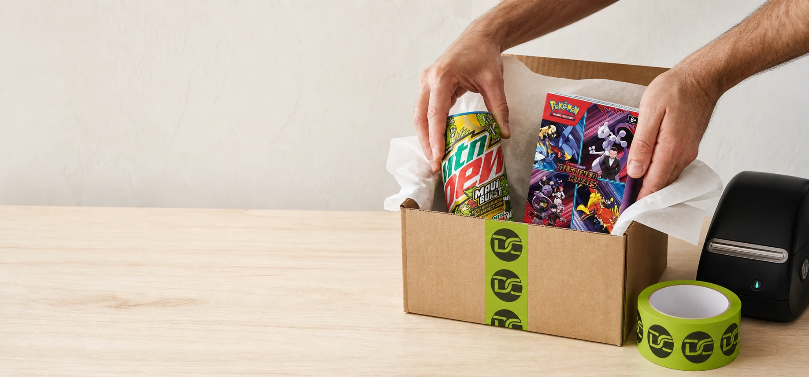

One person behind every find.
The inventory is sourced here, photographed here, packed here, and taken to the carrier by the same person building Discontinued Club.
Small enough to care about every listing. Serious enough to build trust.
The store is run by a real person who photographs, lists, packs, and drops off the inventory. Every current item can be purchased through its matching eBay listing, with lower-priced direct checkout expected September 3.
Rare soda and energy drinks remain the specialty. The catalog is deliberately broader, because the same eye for limited, retired, unusual, and overlooked products applies to sports gear, trading cards, collectibles, and personal care.
Answers when a favorite suddenly disappears.
Use the Discontinued Journal and sold archive to separate confirmed discontinuations from temporary stock gaps, compare older packaging, and follow the evidence behind products that are becoming harder to find.